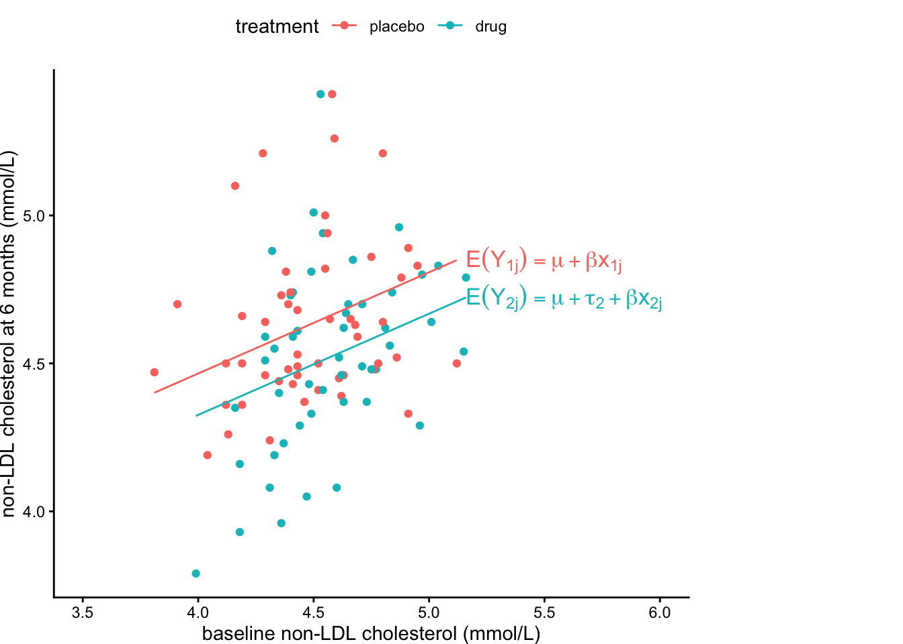
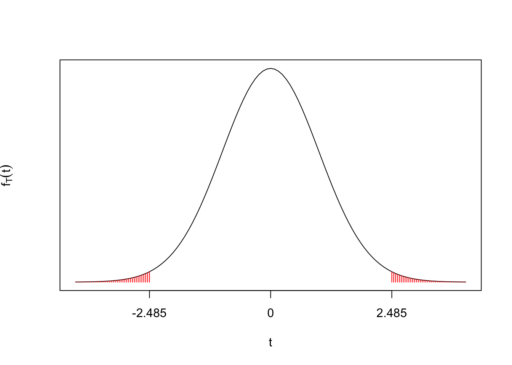
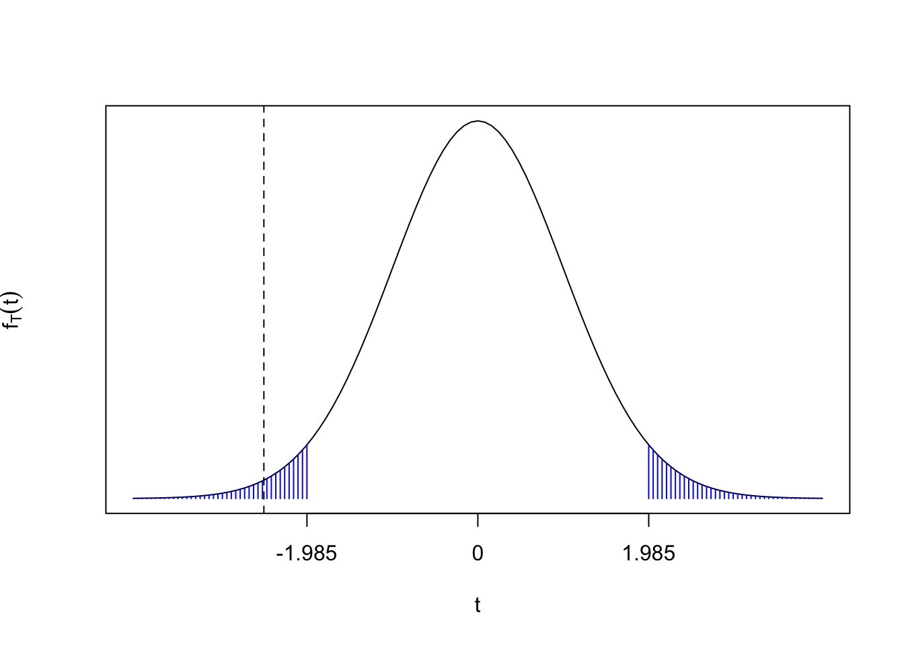

ANCOVA (ANalysis of COVAriance) is the analysis of data involving linear regression with a mix of continuous and factor explanatory variables. In this chapter, we will study the use of ANCOVA for analysing clinical trial data, and use the examples to introduce and discuss some general concepts and issues in clinical trial analysis.
2.1 Example
(This is a fictitious dataset, but is intended to illustrate several typical features of real clinical trial data.)
A parallel group RCT has been conducted to test a new drug for lowering non-HDL cholesterol. The cholesterol level (measured in mmol/L) is recorded for each patient at “baseline” before randomisation, and then patients are randomly allocated to the experimental drug or a placebo, to be taken daily. All patients also given dietary and exercise recommendations, so that the trial is assessing the effectiveness of the drug in addition to these. Each patient’s non-HDL cholesterol is recorded at each month for 6 months.
The data are stored in an R dataset cholesterol.RData, and an extract is shown below.
A little further inspection of the data shows that some values are missing, e.g., in the patient in row 90, there are no recorded values after month 3.
cholesterol[90, ]
treatment age baseline month1 month2 month3 month4 month5 month6
90 drug 61 4.84 4.88 4.68 4.61 NA NA NA
Missing data are common in clinical trial data, and we will discuss this more shortly.
2.2 Statistical Analysis Plans
In general, we don’t wait to get the data before deciding how to analyse it! This all needs planning in advance, and setting out in the trial protocol/statistical analysis plan (see ICH E9 section 5.1). Without an appropriately detailed plan, ethical approval for the trial would not be given.
For Phase III, the choice of method can be guided by data from Phase II, as well as published trials of similar treatments/outcomes. Typically, regulators do not insist on a specific statistical method being used. However, there are particular statistical methods that are conventionally used and well-accepted; we will study some of these in this module. Proposing anything ‘non-standard’ would need justification, and may not be accepted.
2.3 Adjusting for covariates
In an RCT, various covariate information is typically recorded for each patient, e.g. general information about the patient such as their age, and perhaps variables related to their health and status of their condition before starting treatment. Given the random allocation of patients to treatment groups, the expected mean value of a covariate will be the same in each group, but is unlikely that the actual mean value of a covariate will be the same in each group.
As we will see shortly, it can be advantageous for the statistical modelling and analysis to make use of covariate information, particularly when there are strong grounds for thinking the covariate will have an effect on the outcome.
In our example, one of the recorded covariates is “baseline” cholesterol before treatment has begun. We would expect this to have an effect on patient outcomes at the end of the trial, and so should incorporate this in the analysis.
2.4 Estimands and eligibility criteria
When planning the trial, we have to decide how to quantify the effect of the treatment we are testing.
TipDefinition: estimand
The estimand is a precise definition of the treatment effect that we want to know. As well as specifying how the effect of the treatment is defined, the estimand also needs to specify who the treatment effect applies to: what the relevant population of patients is.
TipDefinition: eligibility criteria
A clinical trial will have “eligibility criteria”: these are set of conditions that specify which patients can take in the trial. The eligibility criteria define the patient population for the estimand.
In the example, suppose there were concerns that the drug should not be taken if a patient is also on medication for a heart condition. The eligibility criteria could then exclude such patients from the trial. The estimand could be specified as:
the population mean non-LDL cholesterol (mmol/L) at 6 months for patients taking the drug daily minus the population mean non-LDL cholesterol at 6 months for patients taking a placebo daily;
population of adults, excluding those on medication for heart conditions;
all patients given advice on cholesterol-lowering diet and exercise.
2.5 Missing data, Intention-To-Treat and Per Protocol analyses
Typically, in a Phase III trial there will be some patients who do not receive the treatment as specified in the trial protocol, e.g., a patient forgets to take a dose at a specified time. Sometimes, a patient may stop taking a treatment early because of side effects or lack of any perceived benefit.
Two ways we might analyse the data are as follows
TipDefinition: intention-to-treat analysis
In each treatment group, we analyse the data for every patient allocated to that group, even if they didn’t take the treatment as specified in the trial protocol.
This is thought to best represent how well the treatment would work in practice, if used routinely outside the trial: we should account for the possibility of a patient abandoning their treatment, for example.
TipDefinition: per protocol analysis
In each treatment group, we only analyse the data for the patients who took the treatment as specified in the trial protocol.
This is thought to best represent how well the treatment would work in the best possible circumstances, if the treatment is used as intended.
Regulators normally require the intention-to-treat approach to be used.1
2.5.1 Handling missing data
Related to the issue of intention-to-treat verses per protocol analyses, there is the issue of what to do about missing data. Where we have incomplete data for individual patients, the data can still be valuable, and we may want to incorporate what we have in our analyses to follow the intention-to-treat principle.
Here, we will use a very simple technique (used in practice, but also criticised for its limitations): “last observation carried forward”: we replace each missing value by the last value observed for that patient. We can do this in R with the function na_locf() from the imputeTS package2.
We will use more sophisticated methods for handling incomplete data when we study survival analysis later on in this module.
2.6 An ANCOVA model
Define \(Y_{ij}\) to be the cholesterol level after 6 months of treatment for patient \(j\) allocated to treatment group \(i\), for \(j=1,\ldots,n_i\)
\(i=1\) for “placebo” and \(i=2\) for “drug”.
We have \(j=1,\ldots,50\). Define \(x_{ij}\) to be the corresponding patient’s baseline cholesterol level before treatment.
A possible model is
\[
Y_{ij} = \mu + \tau_i + \beta x_{ij} + \varepsilon_{ij},
\tag{2.1}\] with \(\varepsilon_{ij}\sim N(0, \sigma^2)\) and where we apply the constraint \(\tau_1=0\) (otherwise the model is over-parameterised.)

We now have to relate our model to the estimand as defined in Section 2.4. If we define:
\(\bar{X}\): the population mean non-LDL cholesterol at baseline before treatment,
\(E(Y_2)\): the population mean non-LDL cholesterol (mmol/L) at 6 months for patients taking the drug daily;
\(E(Y_1)\): the population mean non-LDL cholesterol at 6 months for patients taking a placebo daily;
then
\[
E(Y_{2})= \mu + \tau_2 + \beta \bar{X}
\] and \[
E(Y_{1})= \mu + \beta \bar{X}
\] and so the treatment effect, the estimand, defined as the difference between these two population means is \[
E(Y_{2}) - E(Y_{1}) =\tau_2.
\]
2.7 Demonstrating the existence of a treatment effect: hypothesis testing
The ICH E9 guidelines do not say how clinical trial data must be analysed, but discuss the use of hypothesis testing extensively: hypothesis testing is the industry standard.
2.7.1 Trial objectives and the null hypothesis
Trials can have different objectives resulting in different specifications of the null and alternative hypotheses.
2.7.1.1 Superiority trials
We want to show the experimental treatment is more effective than the control. In the example, we would have
\[
H_0: \tau_2 = 0, \quad H_A: \tau_2\neq 0
\] Even though the trial sponsor (the company that has developed the drug) is hoping that \(\tau_2 <0\) (so the drug lowers cholesterol), we still use a two-sided alternative. We would still want to reject \(H_0\) of no treatment effect if there is evidence the treatment has a harmful effect.
NoteCriteria for a successful superiority trial
For a superiority trial to be a success for the trial sponsor, we need the following:
we have sufficient evidence against the null hypothesis, using the two-sided alternative;
the treatment effect estimate needs to have the right sign (e.g. we need the estimate of \(\tau_2\) to be negative in the example);
the treatment effect estimate needs to be sufficiently large in magnitude for the treatment to be considered worthwhile in practice;
the treatment is considered to be sufficiently safe: there were no significant concerns regarding side-effects (“adverse events”) observed in the trial.
Warning‘Evidence’ of no treatment effect
Remember that a key step in any hypothesis test is to assume the null hypothesis is true: we assume there is no treatment effect. If we have assumed\(H_0\) to be true, we cannot then claim we have demonstrated\(H_0\) is true.
2.7.1.2 Other types of trial
In this module, we will consider superiority trials only. For reference, there are other types of trial, with slightly different hypothesis testing procedures.
Non-inferiority trial
The experimental treatment may have other benefits over the control (e.g. no side-effects), such that we may wish to use it on patients even if it is slightly less effective. Some threshold \(d\) would be chosen based on clinical considerations (what constitutes “slightly less effective”). In the example, the hypotheses would be
\[
H_0: \tau_2 \ge d, \quad H_A: \tau_2<d
\]
Equivalence trial
Another scenario is where we wish to demonstrate the experimental drug has a similar effect to the control (again, we have may have separate reasons for preferring the experimental drug in this case.) A threshold \(d\) is again chosen based on clinical considerations, but now, in the example, the hypotheses would be \[
H_0: \tau_2 \ge d\mbox{ or } \tau_2 \le -d,\\ \quad H_A: -d<\tau_2<d
\]
2.8 Implementing and reporting the superiority trial analysis
and then obtain the output we need for analysis with the command
summary(lm1)
Call:
lm(formula = month6 ~ baseline + treatment, data = cholesterol_imputed)
Residuals:
Min 1Q Median 3Q Max
-0.53251 -0.18104 -0.03647 0.13741 0.90280
Coefficients:
Estimate Std. Error t value Pr(>|t|)
(Intercept) 3.09781 0.46417 6.674 1.55e-09 ***
baseline 0.34201 0.10313 3.316 0.00128 **
treatmentdrug -0.13992 0.05631 -2.485 0.01467 *
---
Signif. codes: 0 '***' 0.001 '**' 0.01 '*' 0.05 '.' 0.1 ' ' 1
Residual standard error: 0.278 on 97 degrees of freedom
Multiple R-squared: 0.1337, Adjusted R-squared: 0.1158
F-statistic: 7.482 on 2 and 97 DF, p-value: 0.0009509
From this, we read off the least squares estimate of the treatment effect \(\tau_2\) from the treatmentdrug column: \(\hat{\tau}_2=-0.13995\). To test the hypothesis of no treatment effect, \(H_0:\tau_2=0\), we compute the test statistic \[
T=\frac{\hat{\tau}_2}{\sqrt{\widehat{Var}(\hat{\tau}_2)}}
\] where \(\sqrt{\widehat{Var}(\hat{\tau}_2)}\) is the estimated standard error of \(\hat{\tau}_2\), and is given in the R output as 0.05631. The observed value of \(T\) is reported in the R output as -2.485. If \(H_0\) were true, \(T\) would have a \(t_{n-p}\) distribution, \(n\) is the number of observations (100) and \(p\) is the number of parameters in the model (3). This is the degrees of freedom, reported by R as 97.
For a two-sided alternative hypothesis, the \(p\)-value is \[
Pr(t_{97}\le -2.485) + Pr(t_{97}\ge 2.485),
\] i.e. the probability of observing a test statistic ‘as least as extreme’ as -2.485, if \(H_0\) were true. We visualise this below

R reports the \(p\)-value as 0.01467; the shaded area under the curve is 1.47% of the total area under the curve. As this is a small probability (below 5%), we conclude that this is fairly strong evidence against \(H_0\).
Had we chosen to specify a critical region and reject \(H_0\), if \(T\) lies in the critical region, from the \(p\)-value we can see we would reject \(H_0\) for a test of size 0.05 (5% critical region), but not for a test of size 0.01 (1% critical region). For reference, to find, say, the 5% critical region, we need the 2.5th and 97.5th percentiles of the \(t_{97}\) distribution:
qt(c(0.025, 0.975), 97)
[1] -1.984723 1.984723

We should also report a confidence interval for the treatment effect. For a 95% confidence interval we need to compute \[
\hat{\tau}_2\pm t_{97;\,0.025}\sqrt{\widehat{Var}(\hat{\tau}_2)}
\] though there is a function in R that will give us the confidence interval directly.
give the hypothesis test conclusion and \(p\)-value
refer to the interpretation of the null hypothesis rather than the equation (e.g. “no treatment effect” rather than “\(\tau_2=0\)”)
report and estimate and confidence interval for the treatment effect
include units if appropriate.
So, an example summary of the result would be
“We reject the null hypothesis of no treatment effect at the 5% level of significance (\(p\)-value 0.015). The drug is estimated to give a mean non-LDL cholesterol reduction of 0.14 mmol/L (95% confidence interval: (0.03, 0.25)mmol/L) after 6 months of treatment.”
2.9 Alternative analyses
2.9.1 Ignoring covariates
Since patients were allocated randomly to the two groups, we could choose to ignore the baseline cholesterol covariate, on the grounds that the mean baseline is similar in each group. We could even attempt to justify this with a separate hypothesis test. If we define \(\theta_c\) and \(\theta_t\) to be the mean baseline cholesterol levels in the control and treatment groups respectively, we can test the hypothesis \[
H_0:\theta_c=\theta_t
\] in R (using a two-sample \(t\)-test) as follows:
t.test(baseline ~ treatment, cholesterol_imputed)
Welch Two Sample t-test
data: baseline by treatment
t = -1.5677, df = 97.985, p-value = 0.1202
alternative hypothesis: true difference in means between group placebo and group drug is not equal to 0
95 percent confidence interval:
-0.19330049 0.02268024
sample estimates:
mean in group placebo mean in group drug
4.485098 4.570408
From the output, we see the \(p\)-value is 0.12, and so conclude there is no evidence against \(H_0\).
If we define \(\mu_c\) and \(\mu_t\) to be the mean cholesterol levels in the control and treatment groups respectively after six months, we can test the hypothesis \[
H_0:\mu_c=\mu_t,
\] in R as follows:
t.test(month6 ~ treatment, cholesterol_imputed)
Welch Two Sample t-test
data: month6 by treatment
t = 1.8919, df = 95.195, p-value = 0.06155
alternative hypothesis: true difference in means between group placebo and group drug is not equal to 0
95 percent confidence interval:
-0.005464215 0.226952810
sample estimates:
mean in group placebo mean in group drug
4.631765 4.521020
But the \(p\)-value of 0.06 would not be considered small enough to reject \(H_0\), and we have failed to detect a treatment effect.
Now the difference is no longer significant! To understand this, consider again the model in Equation 2.1, which we will refer to as the “full model”, and then drop the baseline term, to give us a “reduced model. The reduced model is
\[
Y_{ij}=\mu + \tau_i + \varepsilon_{ij},
\] with \(\varepsilon_{ij}\sim N(0,\sigma^2)\).
Now consider the role of the error term \(\varepsilon_{ij}\). This has to represent any measurement error and unexplained variation. In the reduced model, we are no longer explaining variation in cholesterol at six months as a consequence of variation in cholesterol at baseline. The error term \(\varepsilon_{ij}\) had more variation to explain, which leads to a larger estimate of \(\sigma^2\). As the variance of a least squares estimator is proportional to \(\sigma^2\), this increases the variance of \(\hat{\tau}_2\), making it harder to detect a significant treatment effect.
Call:
lm(formula = month6 ~ treatment, data = cholesterol_imputed)
Residuals:
Min 1Q Median 3Q Max
-0.73102 -0.17176 -0.00639 0.17898 0.88898
Coefficients:
Estimate Std. Error t value Pr(>|t|)
(Intercept) 4.63176 0.04087 113.336 <2e-16 ***
treatmentdrug -0.11074 0.05838 -1.897 0.0608 .
---
Signif. codes: 0 '***' 0.001 '**' 0.01 '*' 0.05 '.' 0.1 ' ' 1
Residual standard error: 0.2919 on 98 degrees of freedom
Multiple R-squared: 0.03542, Adjusted R-squared: 0.02557
F-statistic: 3.598 on 1 and 98 DF, p-value: 0.06079
To summarise:
Full model
Reduced model
\(\hat{\sigma}\)
0.278
0.2919
\(\sqrt{\widehat{Var}(\hat{\tau}_2)}\)
0.05631
0.05838
\(R^2\)
0.13
0.035
2.9.2 The “change from baseline” outcome
A more subtle problem can arise if we choose to define “change from baseline” as the response variable. We write
\[
\tilde{Y}_{ij}=\mu + \tau_i + \varepsilon_{ij},
\] where \(\tilde{Y}_{ij} = Y_{ij} - x_{ij}\) is the change in cholesterol from baseline to the three month observation. We can re-write this as \[\begin{align*}
Y_{ij} - x_{ij} & = \mu + \tau_i + \varepsilon_{ij}\\
\Rightarrow Y_{ij} & = \mu + \tau_i + x_{ij}+ \varepsilon_{ij}
\end{align*}\]
If we now compare this with Equation 2.1, we can see this the ANCOVA model with \(\beta=1\). Unless we have good reason to be sure \(\beta\) really does equal 1, fixing \(\beta=1\) is undesirable because, assuming the least squares estimate \(\hat{\beta}\neq 1\) for an ANCOVA model,
we get a model fit that is worse than the least-squares fit: the least-squares fit minimises the sum of the squared errors;
the treatment effect estimator \(\hat{\tau}_2\) is biased: the estimators \(\hat{\tau}_2\) and \(\hat{\beta}\) are typically correlated, and we have fixed \(\hat{\beta}\) at the wrong value;
we get an inflated estimated of \(\sigma^2\), as we haven’t minimised the residual sum of squares: this increases uncertainty about the treatment effect.
We fit the “change from baseline” model and compare the results
Call:
lm(formula = month6 - baseline ~ treatment, data = cholesterol_imputed)
Residuals:
Min 1Q Median 3Q Max
-0.76667 -0.21765 -0.05364 0.22939 0.92939
Coefficients:
Estimate Std. Error t value Pr(>|t|)
(Intercept) 0.14667 0.04615 3.178 0.00198 **
treatmentdrug -0.19605 0.06593 -2.974 0.00370 **
---
Signif. codes: 0 '***' 0.001 '**' 0.01 '*' 0.05 '.' 0.1 ' ' 1
Residual standard error: 0.3296 on 98 degrees of freedom
Multiple R-squared: 0.08277, Adjusted R-squared: 0.07342
F-statistic: 8.844 on 1 and 98 DF, p-value: 0.003702
ANCOVA model
Change from baseline model
\(\hat{\sigma}\)
0.278
0.3296
\(\sqrt{\widehat{Var}(\hat{\tau}_2)}\)
0.05631
0.06593
\(\hat{\tau}_2\)
-0.13992
-0.19605
We can see that the change-from-baseline model has resulted in a larger treatment effect. This has occurred because
the treatment group had a slightly higher mean cholesterol level at baseline;
the ANCOVA model estimated a smaller effect of baseline cholesterol on 6-month cholesterol (\(\hat{\beta}=0.44\));
the change from baseline has compensated for its assumption of a larger effect of baseline cholesterol (\(\beta=1\)) by estimating a stronger treatment effect.
2.10 Incorporating additional covariates
There is one other covariate (age) that we could incorporate into the model. If we define \(z_{ij}\) as the age of patient \(i\) in treatment group \(j\), then a possible model is \[
Y_{ij} = \mu + \tau_i + \beta x_{ij} + \gamma z_{ij}+ \varepsilon_{ij},
\] and we can fit this model in R as follows:
Call:
lm(formula = month6 ~ treatment + baseline + age, data = cholesterol_imputed)
Residuals:
Min 1Q Median 3Q Max
-0.57994 -0.18378 -0.02196 0.13339 0.87133
Coefficients:
Estimate Std. Error t value Pr(>|t|)
(Intercept) 3.282985 0.494079 6.645 1.84e-09 ***
treatmentdrug -0.134618 0.056465 -2.384 0.019087 *
baseline 0.354414 0.103661 3.419 0.000924 ***
age -0.003775 0.003476 -1.086 0.280112
---
Signif. codes: 0 '***' 0.001 '**' 0.01 '*' 0.05 '.' 0.1 ' ' 1
Residual standard error: 0.2778 on 96 degrees of freedom
Multiple R-squared: 0.1442, Adjusted R-squared: 0.1174
F-statistic: 5.391 on 3 and 96 DF, p-value: 0.001798
Here, the test of the hypothesis \(H_0:\gamma=0\) has a test statistic of \(-1.086\) and a \(p\)-value of 0.280112: so no evidence of an age effect.
We will consider later “subgroup analysis”, where we investigate if there are different treatment effects for different subgroups of patients (e.g. subgroups defined by age). In general, however, we do not speculatively search for effects of covariates; we only incorporate covariates when there are good reasons for expecting an effect on the response. This would normally be considered in advance and stated in the protocol/statistical analysis plan.
Steffen Moritz, Thomas Bartz-Beielstein (2017). “imputeTS: Time Series Missing Value Imputation in R”. The R Journal, 9(1), 207-218. doi:10.32614/RJ-2017-009 https://doi.org/10.32614/RJ-2017-009.↩︎